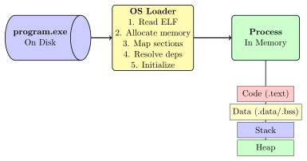
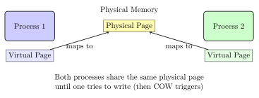
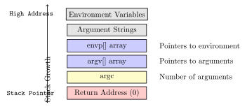

Chapter 6: Program Loading: Bringing Code to Life¶
When you double-click an executable or type its name in a terminal, a complex dance begins. The operating system must transform a dormant file on disk into a living process in memory. This chapter explores how programs come to life through the loading process.
6.1 From File to Process¶
A program on disk is just data - organized, structured, but lifeless. Loading transforms it into an active process with: - Memory space allocated - Code and data properly positioned - CPU state initialized - Resources allocated - Execution ready to begin

6.2 The Boot Process: Before Your Program¶
Before any user program can run, the system itself must boot:
6.2.1 System Initialization¶
-
BIOS/UEFI: Hardware initialization
-
Bootloader: Loads the operating system kernel
-
Kernel: Initializes memory management, drivers, filesystems
-
Init Process: First user-space process (PID 1)
-
System Services: Network, logging, device management
-
Login/Shell: Ready for user programs
6.3 The Executable Format: Reading the Blueprint¶
6.3.1 ELF Header Revisited¶
The loader’s first job is to read and validate the executable:
typedef struct {
unsigned char e_ident[16]; // Magic number: 0x7F 'E' 'L' 'F'
uint16_t e_type; // ET_EXEC (executable) or ET_DYN (shared)
uint16_t e_machine; // Target architecture (x86_64, ARM, etc.)
uint64_t e_entry; // Entry point address (where to start)
uint64_t e_phoff; // Program header table offset
uint16_t e_phnum; // Number of program headers
} Elf64_Ehdr;
6.3.2 Program Headers: The Loading Instructions¶
While section headers were for linking, program headers are for loading:
typedef struct {
uint32_t p_type; // Segment type (LOAD, DYNAMIC, INTERP...)
uint32_t p_flags; // Permissions (R, W, X)
uint64_t p_offset; // File offset
uint64_t p_vaddr; // Virtual address in memory
uint64_t p_paddr; // Physical address (usually ignored)
uint64_t p_filesz; // Size in file
uint64_t p_memsz; // Size in memory (may be larger)
uint64_t p_align; // Alignment requirement
} Elf64_Phdr;
Practical Example
Examining Program Headers:
$ readelf -l program
Program Headers:
Type Offset VirtAddr PhysAddr FileSiz MemSiz Flg Align
PHDR 0x000040 0x0000000000400040 0x0000000000400040 0x0001f8 0x0001f8 R 0x8
INTERP 0x000238 0x0000000000400238 0x0000000000400238 0x00001c 0x00001c R 0x1
[Requesting program interpreter: /lib64/ld-linux-x86-64.so.2]
LOAD 0x000000 0x0000000000400000 0x0000000000400000 0x000794 0x000794 R E 0x200000
LOAD 0x000e00 0x0000000000600e00 0x0000000000600e00 0x000230 0x000238 RW 0x200000
DYNAMIC 0x000e10 0x0000000000600e10 0x0000000000600e10 0x0001d0 0x0001d0 RW 0x8
NOTE 0x000254 0x0000000000400254 0x0000000000400254 0x000044 0x000044 R 0x4
GNU_STACK 0x000000 0x0000000000000000 0x0000000000000000 0x000000 0x000000 RW 0x10
6.4 The Loading Algorithm¶
The kernel’s exec() system call performs the actual loading:
1. Open executable file
2. Read and validate ELF header
3. Check architecture compatibility
4. Set up new address space
5. For each LOAD segment:
a. Allocate virtual memory at p_vaddr
b. Set permissions from p_flags
c. Copy p_filesz bytes from file
d. Zero-fill remaining p_memsz - p_filesz bytes
6. Set up stack
7. Handle dynamic linking if needed
8. Set instruction pointer to e_entry
9. Begin execution
6.5 Memory Mapping: Efficient Loading¶
Modern systems use memory mapping for efficient loading:
6.5.1 Copy-on-Write (COW)¶
Multiple processes can share read-only pages:

6.5.2 Demand Paging¶
Pages are loaded only when accessed:
1. Program starts with minimal pages loaded
2. CPU accesses unmapped address
3. Page fault exception occurs
4. OS page fault handler:
a. Determines if access is valid
b. Allocates physical page
c. Loads content from disk if needed
d. Updates page table
e. Returns to program
5. Instruction retries successfully
6.6 Stack Initialization¶
Before main() runs, the stack must be prepared:
6.6.1 Initial Stack Layout¶

Solved Problem
Stack Exploration
Problem: Write a program to explore the initial stack layout.
Solution:
#include <stdio.h>
#include <stdlib.h>
int main(int argc, char *argv[], char *envp[]) {
printf("Stack Layout Exploration\n");
printf("========================\n\n");
// Main parameters
printf("argc address:
printf("argv address:
printf("envp address:
// Arguments
printf("Command-line arguments:\n");
for (int i = 0; i < argc; i++) {
printf(" argv[
i, &argv[i], argv[i], argv[i]);
}
// Environment (first few)
printf("\nEnvironment variables (first 3):\n");
for (int i = 0; i < 3 && envp[i]; i++) {
printf(" envp[
i, &envp[i], envp[i], envp[i]);
}
// Stack addresses show layout
printf("\nStack grows from high to low addresses\n");
printf("Note how argc (
&argc, &argv, &envp);
return 0;
}
$ gcc -o stackexplore stackexplore.c
$ ./stackexplore arg1 arg2 arg3
Stack Layout Exploration
========================
argc address: 0x7ffd5c8a308c, value: 4
argv address: 0x7ffd5c8a3080
envp address: 0x7ffd5c8a3078
Command-line arguments:
argv[0] at 0x7ffd5c8a3248: './stackexplore' (string at 0x7ffd5c8a4836)
argv[1] at 0x7ffd5c8a3250: 'arg1' (string at 0x7ffd5c8a4845)
argv[2] at 0x7ffd5c8a3258: 'arg2' (string at 0x7ffd5c8a484a)
argv[3] at 0x7ffd5c8a3260: 'arg3' (string at 0x7ffd5c8a484f)
Environment variables (first 3):
envp[0] at 0x7ffd5c8a3270: 'SHELL=/bin/bash...' (at 0x7ffd5c8a4854)
envp[1] at 0x7ffd5c8a3278: 'PWD=/home/user...' (at 0x7ffd5c8a4864)
envp[2] at 0x7ffd5c8a3280: 'USER=alice...' (at 0x7ffd5c8a4874)
6.7 Dynamic Loading¶
For dynamically linked programs, additional steps are needed:
6.7.1 The Interpreter¶
The INTERP program header specifies the dynamic linker:
1. Kernel loads the program
2. Kernel sees INTERP header
3. Kernel loads dynamic linker (ld.so)
4. Control transfers to ld.so, not the program
5. ld.so:
a. Loads required shared libraries
b. Performs relocations
c. Initializes libraries
d. Transfers control to program's entry point
6.7.2 Library Search Process¶
The dynamic linker searches for libraries in order:
-
RPATH in executable (deprecated)
-
LD_LIBRARY_PATH environment variable
-
RUNPATH in executable
-
/etc/ld.so.cache (cached library locations)
-
Default paths (/lib, /usr/lib)
Practical Example
Tracing Dynamic Loading:
# See library dependencies
$ ldd ./program
linux-vdso.so.1 (0x00007fff887dd000)
libc.so.6 => /lib/x86_64-linux-gnu/libc.so.6 (0x00007f9a0c000000)
/lib64/ld-linux-x86-64.so.2 (0x00007f9a0c400000)
# Trace library loading
$ LD_DEBUG=libs ./program
1234: find library=libc.so.6 [0]; searching
1234: search cache=/etc/ld.so.cache
1234: trying file=/lib/x86_64-linux-gnu/libc.so.6
1234: calling init: /lib/x86_64-linux-gnu/libc.so.6
# Preload a library
$ LD_PRELOAD=./mylib.so ./program
6.8 Process Creation: fork() and exec()¶
Unix systems separate process creation from program loading:
6.8.1 The fork() System Call¶
Creates an exact copy of the current process:
#include <unistd.h>
#include <stdio.h>
#include <sys/wait.h>
int main() {
printf("Parent PID:
pid_t pid = fork();
if (pid < 0) {
perror("fork failed");
return 1;
} else if (pid == 0) {
// Child process
printf("Child PID:
// Child continues here
} else {
// Parent process
printf("Parent: Created child
wait(NULL); // Wait for child
}
return 0;
}
6.8.2 The exec() Family¶
Replaces the current process with a new program:
#include <unistd.h>
#include <stdio.h>
int main() {
printf("About to exec...\n");
// Different exec variants:
// execl: list arguments
// execv: vector of arguments
// execle: list with environment
// execve: vector with environment (system call)
// execlp: search PATH
// execvp: vector, search PATH
char *args[] = {"ls", "-l", "/tmp", NULL};
execvp("ls", args); // This replaces our program!
// Only reached if exec fails
perror("exec failed");
return 1;
}
6.8.3 The Complete Picture: Shell Launching a Program¶
int launch_program(char *program, char *args[]) {
pid_t pid = fork();
if (pid == 0) {
// Child: become the new program
execvp(program, args);
perror("exec failed");
exit(1);
} else if (pid > 0) {
// Parent: wait for child
int status;
waitpid(pid, &status, 0);
return WEXITSTATUS(status);
} else {
perror("fork failed");
return -1;
}
}
6.9 Security Considerations¶
6.9.1 Address Space Layout Randomization (ASLR)¶
Modern systems randomize memory layout to prevent exploits:
# Run program multiple times, observe different addresses
$ ./program
Stack variable at: 0x7ffd8c9a4520
$ ./program
Stack variable at: 0x7fff2d8b1520 # Different address!
# Disable ASLR (for debugging)
$ echo 0 | sudo tee /proc/sys/kernel/randomize_va_space
# Enable ASLR (default)
$ echo 2 | sudo tee /proc/sys/kernel/randomize_va_space
6.9.2 Executable Space Protection¶
Modern CPUs support NX (No eXecute) bit:
Real-World Analogy
Think of memory protection like room access in a building:
-
Read: You can look into the room
-
Write: You can modify things in the room
-
Execute: You can perform activities in the room
Code sections are like classrooms (read+execute), data sections are like storage (read+write), and the stack traditionally was both, but modern systems prevent execution for security.
6.10 The C Runtime: Before main()¶
Before main() runs, the C runtime performs initialization:
// Simplified _start function (actual entry point)
void _start() {
// 1. Set up initial stack frame
// 2. Initialize thread local storage
// 3. Initialize heap allocator
// 4. Set up standard I/O
// 5. Register cleanup functions
// 6. Call global constructors
// Finally call main
int result = main(argc, argv, envp);
// 7. Call global destructors
// 8. Flush I/O buffers
// 9. Call exit with result
exit(result);
}
6.11 Exercises¶
Exercise for You
Exercise 6.1: Custom Loader
Write a simple ELF loader that: 1. Opens an ELF file 2. Parses the headers 3. Displays all LOAD segments 4. Shows where each segment would be loaded 5. Identifies the entry point
Test with various executables and compare with readelf output.
Exercise for You
Exercise 6.2: Process Tree
Create a program that: 1. Forks multiple child processes 2. Each child forks its own children 3. Uses wait() to synchronize 4. Prints a visual tree of the process hierarchy 5. Shows how exec() affects the tree
Exercise for You
Exercise 6.3: Dynamic Loading Investigation
1. Create a program that uses multiple shared libraries 2. Use LD_DEBUG to trace the loading process 3. Experiment with LD_PRELOAD to override functions 4. Measure the overhead of dynamic vs static linking 5. Write a report on your findings
6.12 Chapter Summary¶
Program loading transforms static files into living processes:
-
ELF parsing: Headers guide the loading process
-
Memory setup: Virtual address space is created
-
Segment loading: Code and data are mapped
-
Dynamic linking: Libraries are loaded and bound
-
Stack initialization: Arguments and environment prepared
-
Control transfer: Execution begins at entry point
Our simple addition function, now loaded at a specific address in memory, is ready for the CPU to execute. The stage is set for computation to begin!
Key Takeaway
Key Insight: Loading is where the OS takes control, transforming passive files into active processes. It’s the boundary between storage and execution, between potential and action.
Next: Chapter 7 - CPU Execution: The Hardware/Software Interface